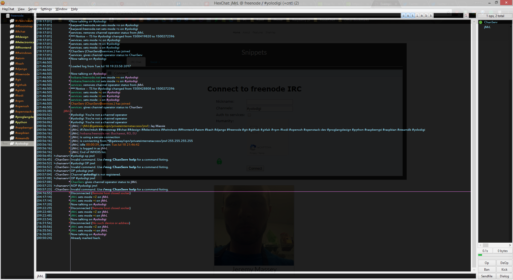
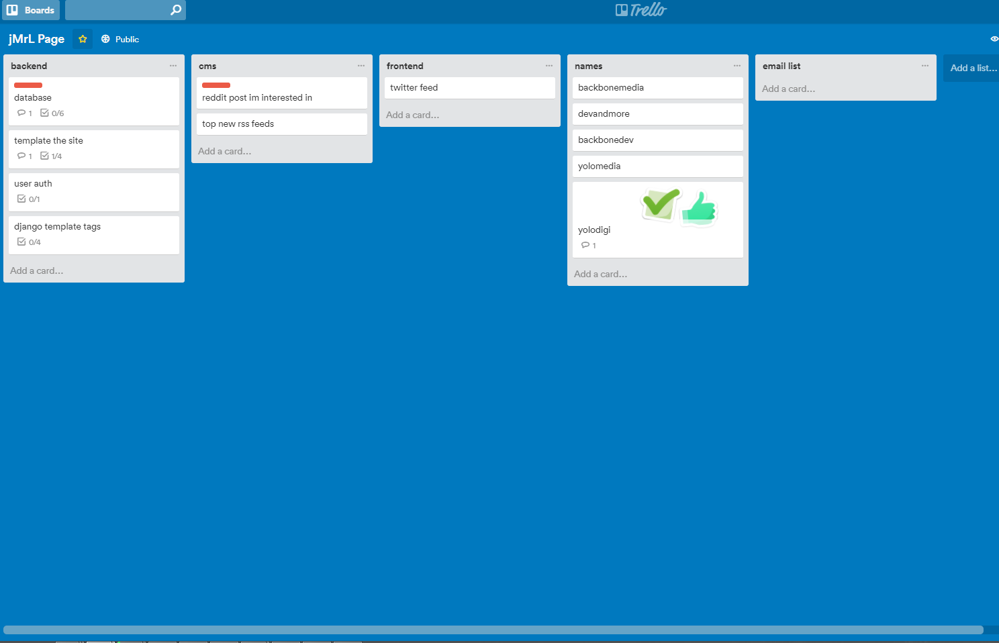
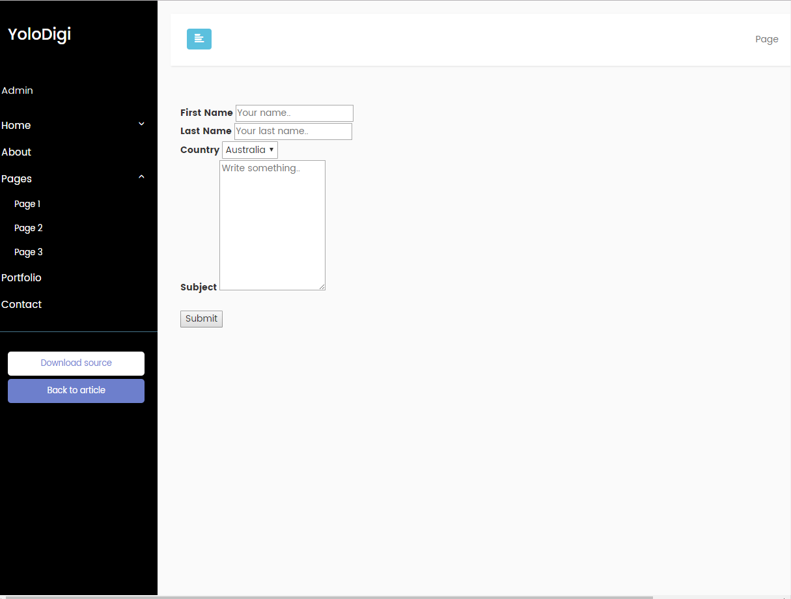

-->  <script>
  // Automatic Slideshow - change image every 3 seconds
  var myIndex = 0;
  carousel();

  function carousel() {
      var i;
      var x = document.getElementsByClassName("mySlides");
      for (i = 0; i < x.length; i++) {
         x[i].style.display = "none";
      }
      myIndex++;
      if (myIndex > x.length) {myIndex = 1}
      x[myIndex-1].style.display = "block";
      setTimeout(carousel, 3000);
  }
  </script>
<div class="bg-primary">
<div class="container bg-primary">
   <div class="row bg-primary">
     <div class="col-md-12">
       <center><section><span class="mySlides"><h1>IRC</h1><br>
         </span>
         <span class="mySlides"><h1>Trello</h1><br>
         </span>
         <span class="mySlides"><h1>Admin Page</h1><br>
         </span>
       </section></center>
       <br>

     </div>
   </div>
</div>
</div>
 <!-- Page Tabs -->
 <div class="pagi-social bg-faded">
   <div class="container py-3 ">
     <div class="row">
       <div class="col-md-12">
         <div class="h1 text-center">
           Snippets
         </div>
         <ul class="nav nav-tabs">
           <li role="presentation" class="active bg-info"><a href="#dev-team" aria-controls="dev-team" role="tab" data-toggle="tab">Dev Team</a></li>
           <li role="presentation" class="bg-info"><a href="#irc" aria-controls="irc" role="tab" data-toggle="tab">IRC Chat</a></li>
           <!-- <li role="presentation"><a href="#irc" aria-controls="Social" role="tab" data-toggle="tab">Messages</a></li> -->
           <li role="presentation" class="dropdown">
             <a class="dropdown-toggle bg-info" data-toggle="dropdown" href="#"
                 role="button" aria-haspopup="true" aria-expanded="false">Social </a>
               <ul class="dropdown-menu ">
                 <li role="presentation"><a href="#tweets-yolo" aria-controls="tweets-yolo" role="tab" data-toggle="tab">Tweets from YoloDigital</a></li>
                 <li role="presentation"><a href="#facebook" aria-controls="facebook" role="tab" data-toggle="tab">Facebook</a></li>
                  <li role="presentation"><a href="#tweets-jmrl" aria-controls="Social" role="tab" data-toggle="tab">Tweets from the Developer</a></li>

               </ul>
           </li>
         </ul>
         <!-- Tab panes -->
           <div class="tab-content">
             <div role="tabpanel" class="tab-pane active" id="dev-team"><center>
<iframe src="https://docs.google.com/forms/d/e/1FAIpQLSetUqjrDKiJeT-fpRCZVqGhZwRh7p_X9nUzUfTNj8xuxWHNBg/viewform?embedded=true" width="100%" height="500" frameborder="0" marginheight="0" marginwidth="0">Loading...</iframe>
             </center></div>
             <div role="tabpanel" class="tab-pane py-3 col-centered" id="irc">
               <center>
                 <iframe class="webchat" src="http://webchat.freenode.net?channels=%23yolodigi" width="100%" height="400"></iframe>
               </center>
             </div>
             <div role="tabpanel" class="tab-pane py-3 col-centered" id="tweets-jmrl">
               <center>
                 <!-- //twitter addons -->
                 <!-- <div class="text-center"><a class="twitter-follow-button" href="https://twitter.com/jMrLgg" data-show-count="0"> Follow @jMrLgg</a> -->
                 <a class="twitter-follow-button" href="https://twitter.com/jMrLgg" data-show-count="0"> Follow @jMrLgg</a><br>
                 <a class="twitter-timeline" data-width="100%" data-height="600" data-theme="dark" data-link-color="#F5F8FA" href="https://twitter.com/jMrLgg">Tweets by jMrLgg</a>
                 <script async src="https://platform.twitter.com/widgets.js" charset="utf-8"></script>

               </center>
             </div>
              <div role="tabpanel" class="tab-pane py-3" id="tweets-yolo">
                <center>
                  <!-- //twitter addons -->
                  <!-- <div class="text-center"><a class="twitter-follow-button" href="https://twitter.com/jMrLgg" data-show-count="0"> Follow @jMrLgg</a> -->
                  <a class="twitter-follow-button" href="https://twitter.com/yolodigi" data-show-count="0"> Follow @YoloDigi</a><br>
                  <a class="twitter-timeline" data-width="100%" data-height="600" data-theme="dark" data-link-color="#F5F8FA" href="https://twitter.com/yolodigi">Tweets by jMrLgg</a>
                  <script async src="https://platform.twitter.com/widgets.js" charset="utf-8"></script>

                </center>
             </div>
             <div role="tabpanel" class="tab-pane py-3" id="facebook">

               <center>
               <iframe src="https://www.facebook.com/plugins/page.php?href=https%3A%2F%2Fwww.facebook.com%2FYoloDigi&tabs=timeline%2C%20events%2C%20messages&width=840&height=800&small_header=true&adapt_container_width=true&hide_cover=false&show_facepile=false&appId=134295447162236" width="600" height="600" style="border:none;overflow:hidden" scrolling="no" frameborder="0" allowTransparency="true">
               </iframe>
             </center>
             </div>
             <div role="tabpanel" class="tab-pane" id="github">...</div>
           </div>
       </div>
     </div>
   </div>
 </div>
